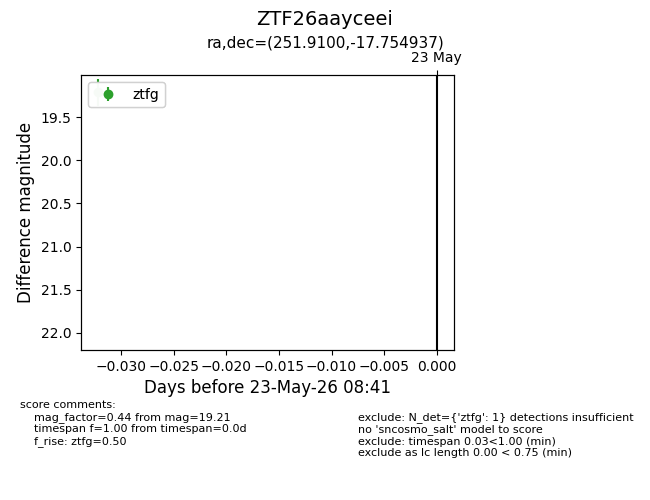
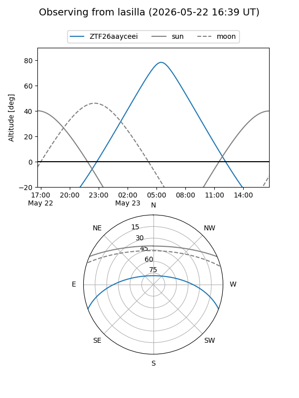
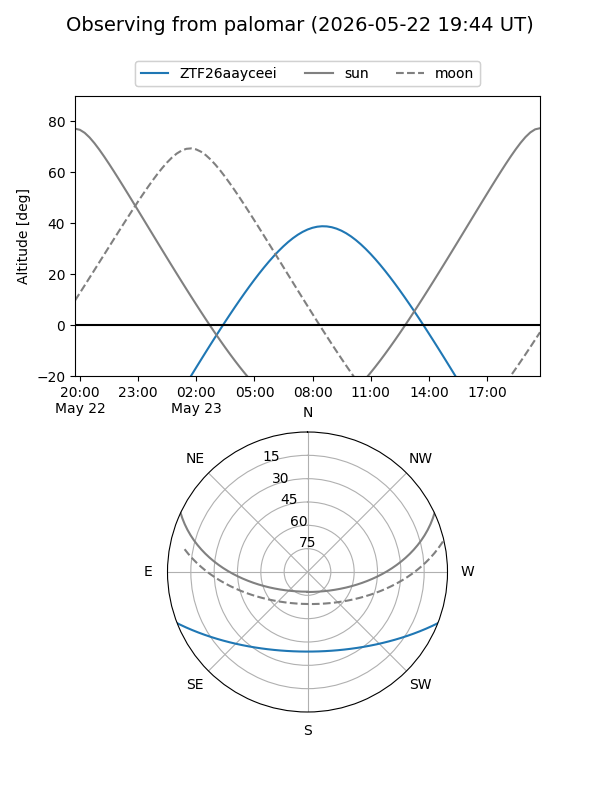

ZTF26aayceei
Target ZTF26aayceei at 2026-05-23 08:42
Aliases and brokers:
lsst-FINK: link
lsst-Lasair: link
lsst-ALeRCE: link
ztf-FINK: link
ztf-Lasair: link
ztf-ALeRCE: link
alt names
ZTF26aayceei (ztf,fink_ztf)
Coordinates:
equatorial (ra, dec) = 251.9100,-17.75494
equatorial (HMS+DMS) = 16:47:38.41,-17:45:17.77
galactic (l, b) = (1.7279,+17.26870)
Flags:
Photometry:
last ztfg=19.21
1 ztfg detections
Lightcurve

Visibility


Additional plots